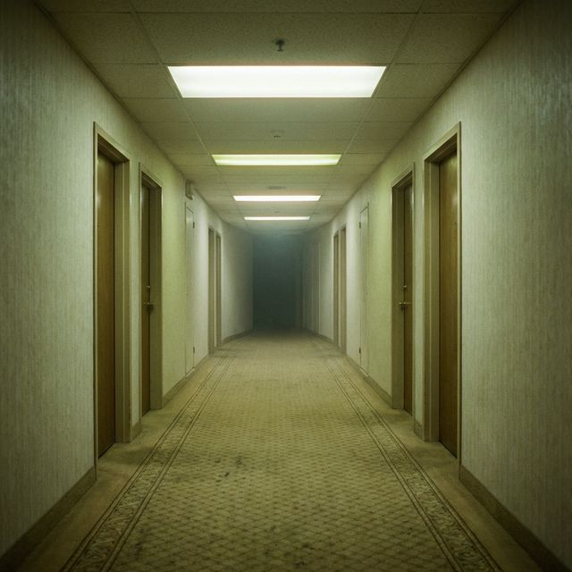
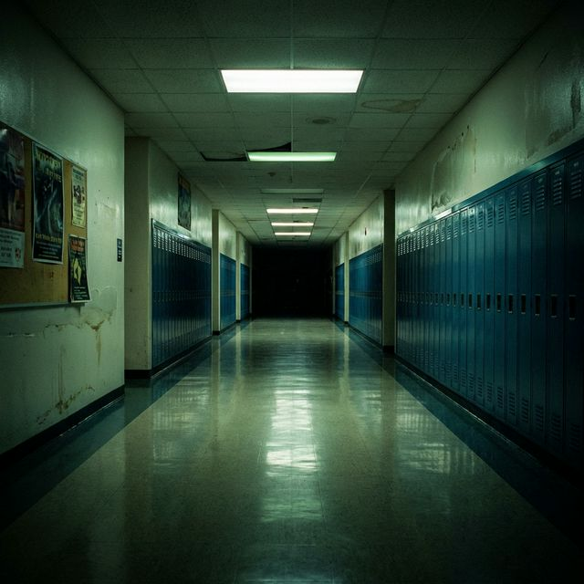
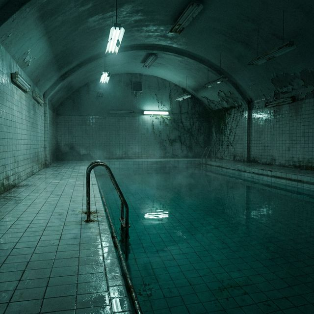
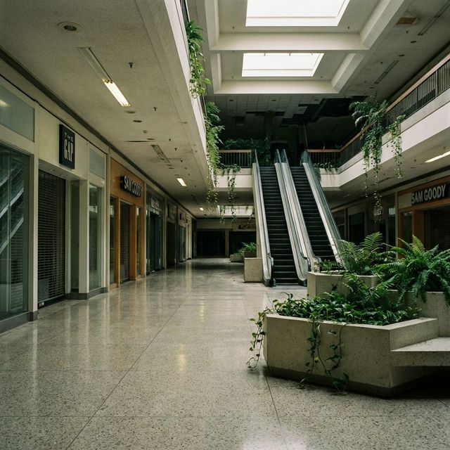
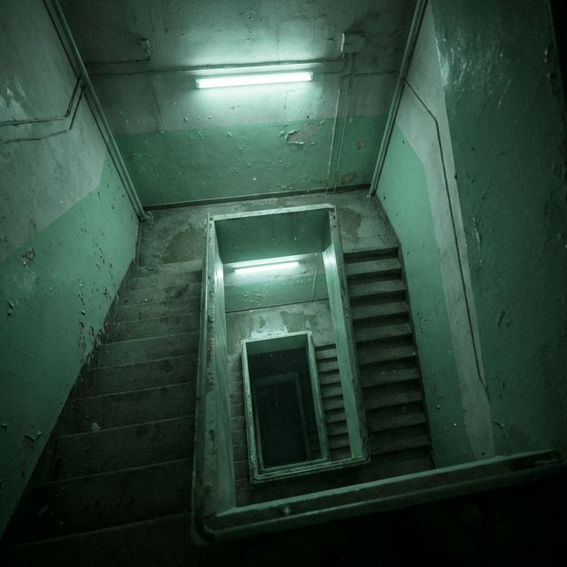
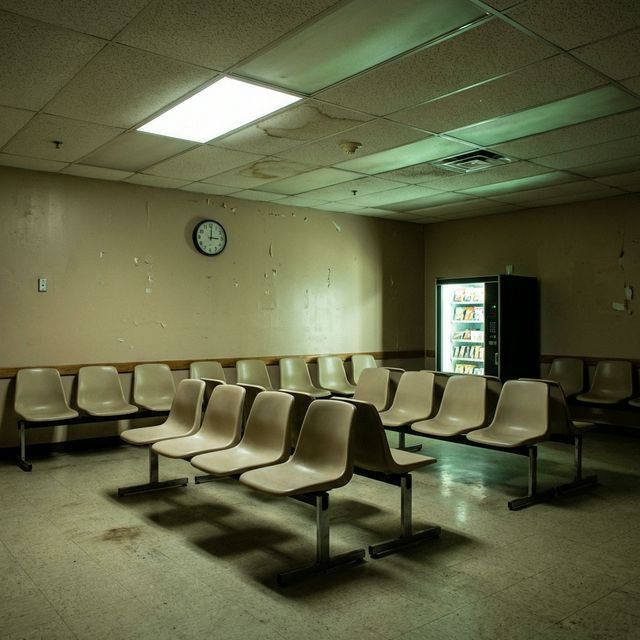

Hallway B-12
Third floor. The lights never switch off.

An archive of in-between places
Spaces meant for passing through become haunting when no one is left inside.
01 — Definition
Liminal spaces are transitional environments: hallways, waiting rooms, parking lots after midnight. They are built to move through, not stay in.
When emptied of people and purpose, these places feel uncanny. Familiar details remain, but context disappears.
From Latin līmen, meaning “threshold”.

02 — Gallery
Third floor. The lights never switch off.

No movement. No echo. Just hum.

The music stopped months ago.

Every landing looks identical.

Your number is never called.
You forgot which door is yours.
03 — Psychology
Your brain recognizes the location, but not the expected activity.
Infrastructure remains while human meaning vanishes.
Without social cues, minutes and hours blur together.
The fear that these spaces might extend forever.
You walk inside a building you don't remember entering.
The lights buzz softly overhead.
A clock says 3:14. It keeps saying 3:14.
You turn the corner and find the same hallway again.
You've always been here.